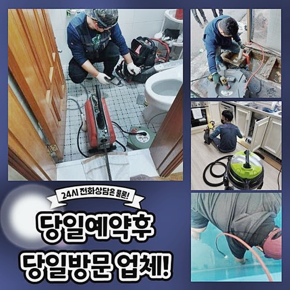
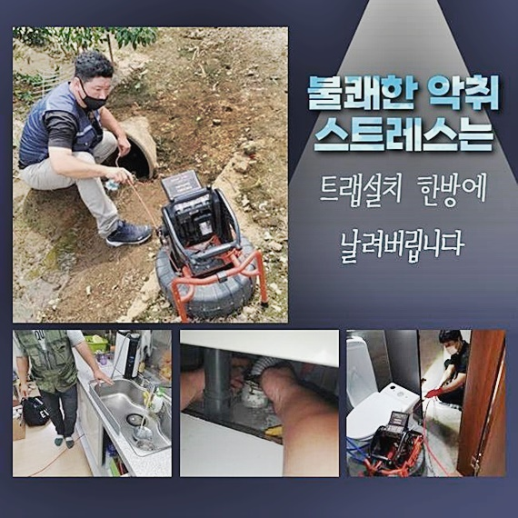
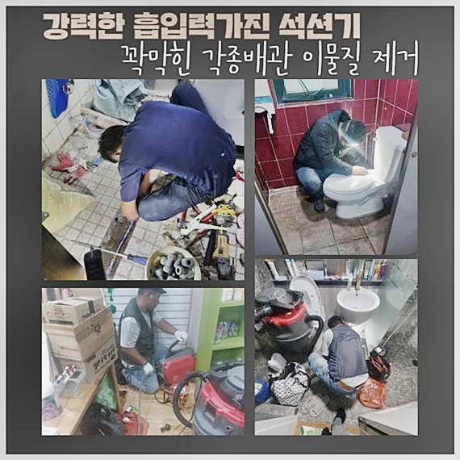
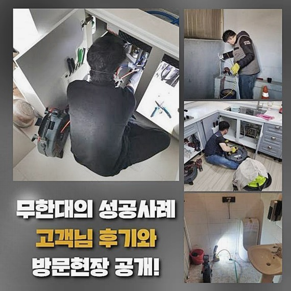
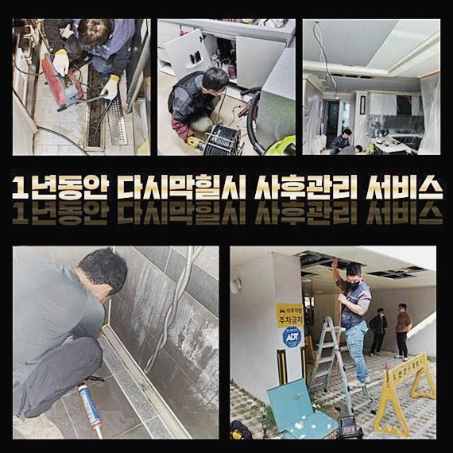

🏠 은평구 수색동세탁실역류 역촌동 배수로뚫기 출장수리
용인시 처인구 배관막힘 전문 시공 후기

📋 작업 개요
- 위치: 용인시 처인구, 수원시 영통구, 화성시 동탄
- 서비스 유형: 배관막힘, 누수수리, 고압세척, 내시경점검
- 작업 일시:
- 업체명: 하수구수사대 (010-5615-2118)
🔍 문제 상황
은평구 수색동세탁실역류 역촌동 배수로뚫기 출장수리
쉽게 해결되는 막히는 문제들이 아닐지라도 배수 시설들을 세심하게 주시해야될 필요성이 있어요
밖으로 드러난 문제들이 없을지언정 침전된 잔여물질은 뒤엉키면서 해결하기 힘든 이차적인 증세들로 불거져요
아파트등에 거처를 마련한 경우라면 배수가 안되는 일로 잘못하면 이웃주민에게 불편을 끼치기에 현 상황에서 의심될 시 조속하게 까닭을 파악해봐야합니다
왜냐면 통수오류의 경우 심해질때 역류들이 생겨나거나 누수증세가 야기될 가능성이 많으므로 처리를 서둘러 진행해주면 피해들을 피할 수 있어요
때문에 전문인의 입장으로 생각해 볼때에 늦추지말고 수습하는것을 지속적으로 강조드리는 까닭도 이러하기에 그렇습니다
상당인원들이 사는 건축물이라면 배관끼리 연결된채로 있어서 이곳저곳으로 생활하수들이 이동하게됩니다
안내할 장소는 상가들과 거주세대가 혼재되어있는 거주공간에서 발발했습니다
이러한 구조에서는 배수관로들이 다양할 확률이 많겠으나
오늘 방문한 스팟에서는 무난했던 모습으로 보여졌어요
내방했던 건축물서도 가정에서 하수시스템 결함이 생겨났다고 설명해주셔서 문제의 장소로 이동했습니다
방문하고 둘러보니 다행이였던건 아래의 시설은 멀쩡했고 아래공간은 화장실쪽으로 곧장 진단에 착수했습니다

🔎 원인 분석
💡 전문가 진단: 정밀 진단 장비를 사용하여 슬러지의 고착 여부를 판명하고 타격/세척 작업을 실시했습니다.
천정부에 존재하는 점검부품을 열어보았더니 가로지르는 큼지막한 라인의 형태가 보였어요
들여보고나니 하수라인에 구멍을 뚫는 자국이 보였어요
오래도록 지속적으로 막힌 증상이 생겨서 작업들을 해주었던걸로 판단할 수 있었어요
구조문제로 막힘이 잦거나 원인들이 파악되질 않아서 계속해서 증세가 불거지게되기 마련입니다
위와같은 사안을 인지하고 상층에 있는 주거지로 자리를 옮겨 바로 배관의 모습을 보려고 했어요
들여보고나니 지금은 막히게되어서 내시경기가 사용될 수 없는 상태였어요
이러한 경우에선 석션장치로 부유물들을 제거하고 내시경도구를 써주는데요
석션기기를 하수관에 접합시킨후에 강한 압력으로 오수를 빼내었는데 기대완달리 거의 오염된 물이 나왔고 이물들의 잔재만 나오게되었습니다
증상을 진단하기위해서는 내시경도구를 이용하여 내측을 확인해야해요
어디부분에서 막힘이 생겨난것인지 왜 역류증세가 나타나게된건지 주시하면서 진단하니 현재의 장소보단 아랫층의 천정부에서 시공작업을 실시해 뚫어내는게 원활한 해결이 될거라 생각했어요
진단결과에 따라서 위처럼 시공부위를 조정하면서 이어가죠 필요하다느끼면 내측에서 막혔어도 바깥에 존재하는 하수관로에서 점검을 하기도 해요
막힘들을 풀어가는 최상의 위치를 특정시키는것도 전문인의 실력 중 하나라고 여겨집니다
곧바로 아랫층의로 위치를 이동시키고 앞서 시행할 작업을 준비들을 시작했습니다

🔧 작업 과정
배수로를 뚫어내기 위하여 이용한 장치는 샤프트도구라는 기기인데요
일반적으로 현장들에서 주로 이용되는 장치로 잔해물을 분쇄시켜 청결함 유지까지 이행하죠
샤프트장치를 사용하여 이물을 제거하기 시작했어요
오늘의경우 일반의 사항관 다른양상으로 하수도의 구경도 넓었고 잔해물들도 상당했던 탓에 샤프트만으론 역부족이라는걸 느꼈어요
오늘의 해결을 목적으로 고압수청소가 수행되어야한다는 판단을 내렸는데요
쎈 물들을 사용하여 이물들을 없애줘야 진정한 해결에 가까워질 수 있었어요
통수를 위한 공간이 보이지않을 수준으로 여기저기 내부를 가로막고있었습니다
예상한 바로는 타 전문진은 석션장비와 샤프트제거를 목적으로한 단계에서 끝내고 철수한 걸로 보여졌죠
그렇기에 한시적으론 쓸 수 있었겠으나 증세가 입 아프게 반복되고 좀처럼 배수관이 온전히 작동하기 어려울것으로 판단되었어요
저희들이 고객님의 의뢰를 반드시 해결하리라 마음먹었기에 완벽히 증세를 시정하고자 했습니다
샤프트장비보단 높은 압력의 작은 크기의 고압수청소기를 꺼내 연결을 시켜보았죠
사실 고압수청소가 이물제거를 이어나갈때 강한 물들을 사용하여 작업을 실시하므로 안전성을 잘 갖춰야합니다
적재적소에 맞는 작업들을 수행하지않는다면 문제양상을 잠재우는것이 이루어지지 않아서 다시금 안타깝게도 동일문제 발생으로 부메랑처럼 날아오죠
그러므로 의뢰자께선 며칠지나면 막혀버리는 고리를 끊고싶어서 저희들에게 문제를 맡기신건데요
청소를 진행할땐 간소하게 이물축적 스팟만 시공하는것이 아닌 원인부분을 제대로 시정해내어 내측 공간이 확보될 수 있게 깨끗히 수리를 할 예정이에요
이전작업을 할 때 타공이 실시된 부분에 작은 크기의 고압수청소기를 투입해주고 이물질 배출을 실시해주었어요
그렇지않아도 가정이기때문에 배관 구경이 크질 않아 크란즐 작업이 쉽지만은 않았었어요 허나 지속적으로 몰두해서 배관 세척을 진행시켰죠
물리력이 상당한 청수들이 뿜어져 나오면서 배수관을 세척했고 놓친부분과 더불어 완벽히 작업해드렸습니다
고압 작업을 하여 오수들이 배출되는 시점에 조금의 요소들이 보이지않을만큼 깨끗히 작업들을 정리해주었는데요
최종적으로 물빠짐 확인까지 수행해 하수구막힘 작업을 끝내주었어요


✅ 작업 완료
보통 거주지에서는 고압세척작업들을 수행해주는 경우들은 흔하게 보이지 않습니다 배수문제를 파악한 다음 고압세척 과정이 요구된다는 생각이 들게되어 제대로 청소했어요
반복적으로 막혀버릴만큼의 이물들이 고착화까지 진행되었기에 수리를 마치고 나니 저희까지 안심이 되었죠
위치에따라서 구조라던지 설비적 요소들이 다르므로 장치나 절차들도 알맞도록 준비해야겠습니다
저희의경우 여태까지 해결한 노하우들을 기반해 재발 걱정 안할 수 있는 시공으로 문제의 하수도를 시정해요
고객분의 노력들이 아깝지않게 저희가 발 벗고 나설게요!


⚠️ 하수구 배관 막힘 예방 및 관리 가이드
- ✅ 머리카락, 비닐, 물티슈 등 물에 분해되지 않는 이물질은 절대 흘려보내지 마세요.
- ✅ 기름기 많은 식기는 설거지 전 키친타올로 먼저 기름때를 닦아내세요.
- ✅ 주기적으로 배수구에 뜨거운 물을 가득 부어주어 유지방 고착을 방지하세요.
- ✅ 작업 후 1년 이내 재발 시 무상 A/S 보증 서비스를 제공합니다.
💡 핵심 정리
- 확실한 장비 작업(내시경 점검 및 샤프트 스케일링)으로 원인을 뿌리 뽑습니다.
- 작업 후 1년 이내에 동일한 부위 재발 시 100% 무상 A/S 서비스를 보장합니다.
- 서울 · 경기 · 인천 전 지역에 24시간 언제든 긴급 출동할 수 있도록 항시 대기 중입니다.
❓ 자주 묻는 질문 (FAQ)
🚨 용인시 처인구 배관막힘 문제로 고민이신가요?
정확한 원인 진단과 확실한 시공으로 재발 없는 해결을 약속드립니다.
24시간 긴급 출동 | 서울 · 경기 · 인천 전지역 | 1년 내 재발 시 무상 A/S